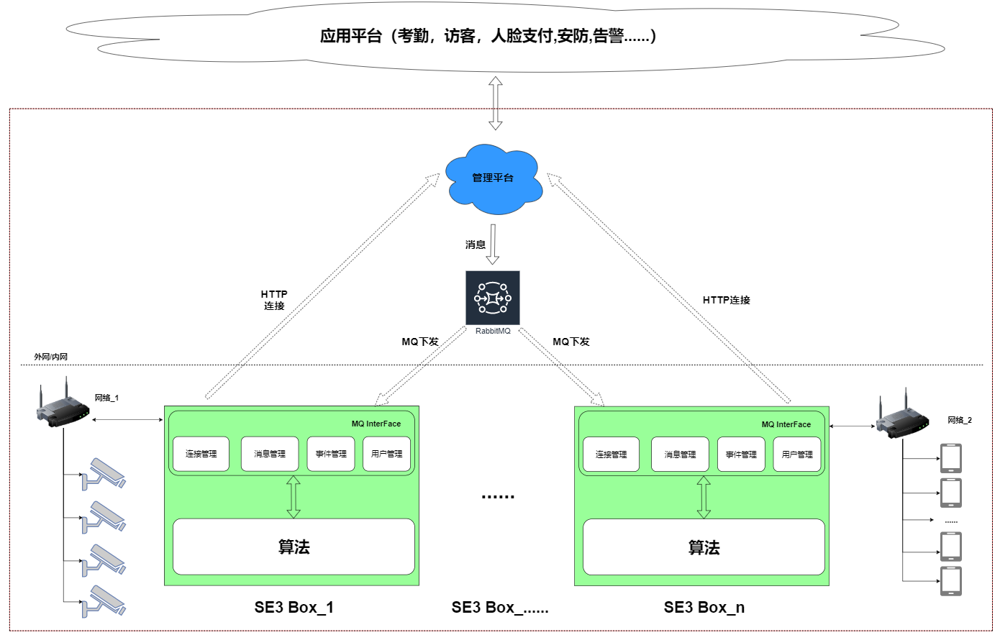
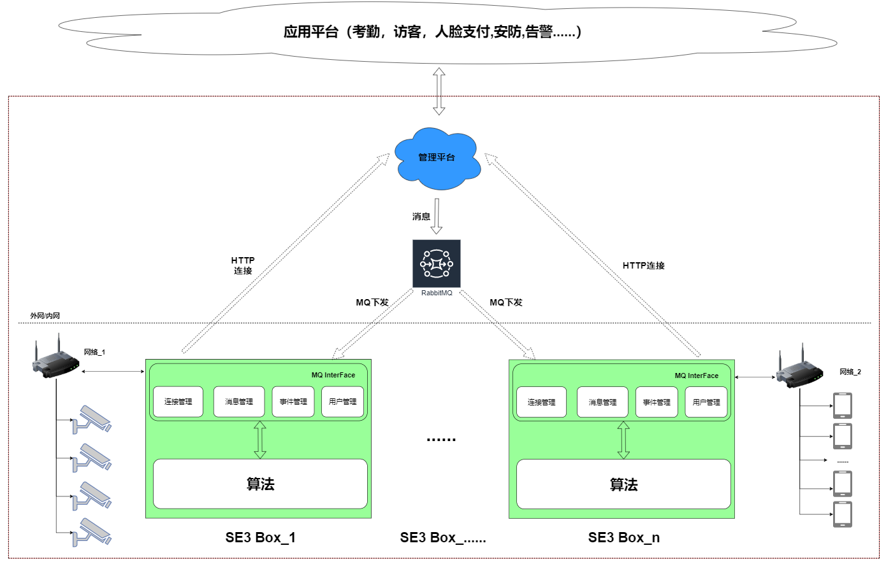

灵活方便的系统对接
整个系统框架如下：

图中，被红色虚线框定的是已经完成的样本系统，提供SE3 AI迷你机管理，采集设备管理等。
客户在系统对接的过程中，可以对接现有的管理平台 或是自建管理平台
对接现有的管理平台
- 只需要对接人员信息即可
- 支持一个或多个SE3 AI迷你机场景
- 简单，便捷，开发周期短
自建管理平台
- 需要遵循《SE3迷你机管理协议》
- 支持一个或多个SE3 AI迷你机场景
- 灵活，可自定义产品
整个系统框架如下：

图中，被红色虚线框定的是已经完成的样本系统，提供SE3 AI迷你机管理，采集设备管理等。
客户在系统对接的过程中，可以对接现有的管理平台 或是自建管理平台
对接现有的管理平台
自建管理平台